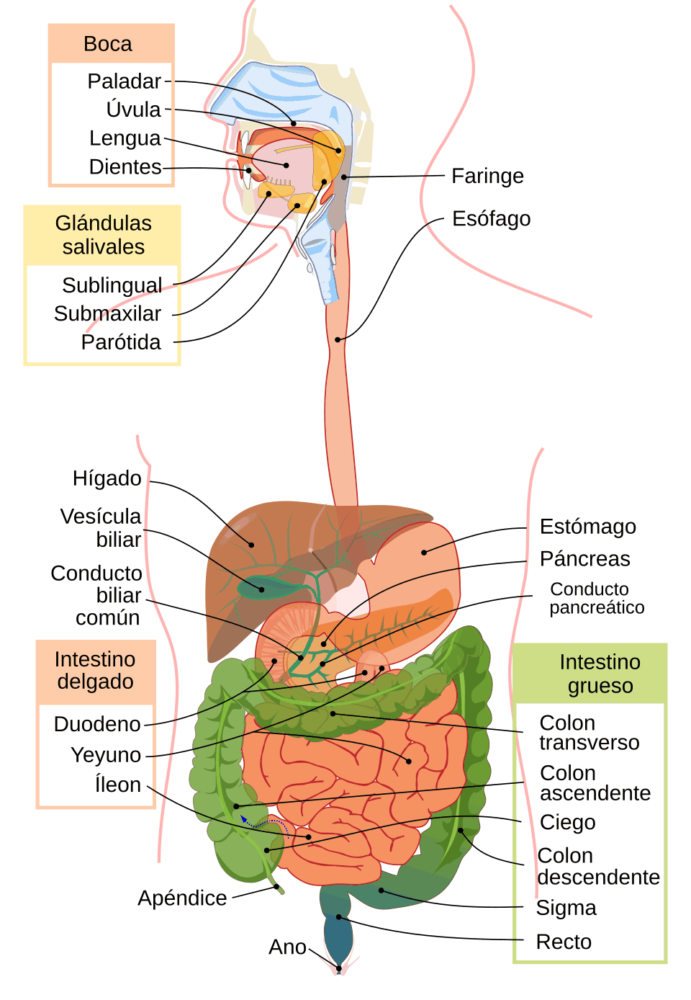
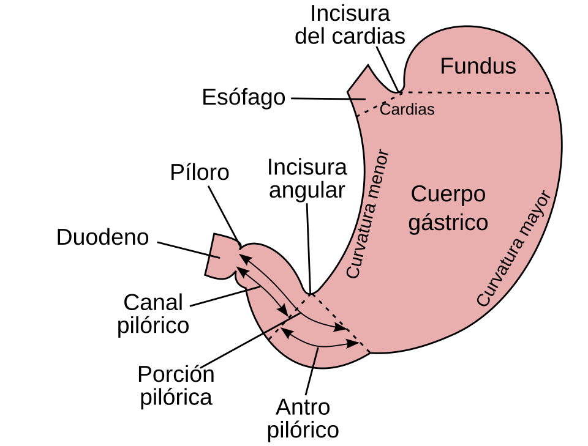
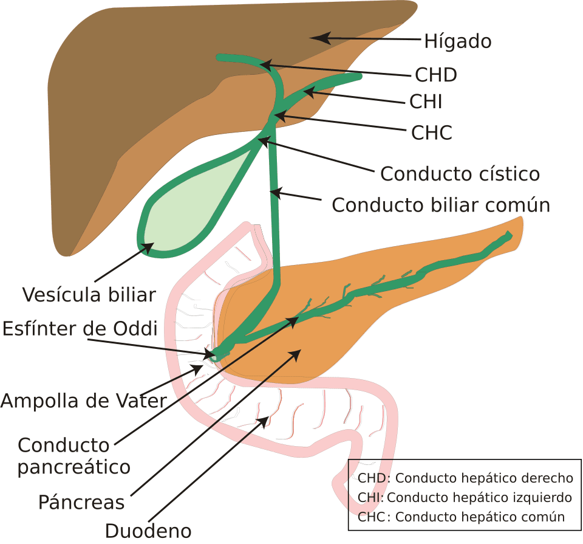

Clase 10 del cronograma (20/10), segundo parcial. El tema tiene una estructura muy conveniente para estudiar: un mismo plan de cuatro túnicas que se repite de la boca al ano y se va modificando. Si dominás ese plan y sus variantes, resolvés la mayoría de las preguntas histológicas sin memorizar órgano por órgano.
Digestivo · la anatomía que mostró el docente en clase
Son 24 diapositivas. La primera resume qué hace cada órgano; después van, en orden, dientes y lengua, boca y faringe, esófago y estómago, duodeno con el páncreas y la vía biliar, hígado, intestino delgado, colon, bazo y los vasos del abdomen. Lo que pregunta: qué tramo sigue a cuál, qué desemboca en qué y qué hace cada órgano. Las láminas se pueden abrir en grande tocándolas.

Deslizá la tabla de costado para ver el resto.
| Estructura | Lo que hay que poder decir |
|---|---|
| Boca | Dientes: 32 en el adulto (en cada mitad de cada arcada, 2 incisivos, 1 canino, 2 premolares y 3 molares). Lengua, con sus papilas. Tres pares de glándulas salivales: parótida (la mayor), submandibular y sublingual. Atrás se abre en la orofaringe por el istmo de las fauces |
| Faringe y esófago | La faringe empuja el bocado al esófago, un tubo muscular de unos 25 cm que baja por detrás de la tráquea, atraviesa el diafragma y termina en el cardias |
| Estómago | Entrada: cardias. Salida: píloro. Partes: fundus, cuerpo y antro. Dos curvaturas, menor y mayor; de la mayor cuelga el omento mayor, el delantal de grasa que cubre el intestino |
| Duodeno | Primera parte del intestino delgado, en forma de C alrededor de la cabeza del páncreas. Cuatro porciones. En la segunda desembocan el colédoco y el conducto pancreático |
| Yeyuno e íleon | El resto del intestino delgado, sujeto por el mesenterio. El íleon desemboca en el ciego, por la válvula ileocecal |
| Intestino grueso | Ciego (con el apéndice), colon ascendente, transverso, descendente y sigmoides, recto y conducto anal. Colon derecho: ciego y ascendente. Colon izquierdo: descendente y sigmoides |
| Hígado y vesícula | El hígado ocupa el hipocondrio derecho y parte del epigastrio, debajo del diafragma. Fabrica la bilis; la vesícula la almacena y la concentra. Por su hilio entran la vena porta y la arteria hepática y sale la vía biliar |
| Páncreas | Cabeza (dentro de la C del duodeno), cuello, cuerpo y cola (llega hasta el bazo). Glándula mixta: exócrina (jugo pancreático, al duodeno) y endócrina (insulina y glucagón, a la sangre) |
| Bazo | En el hipocondrio izquierdo, por detrás del estómago. No es digestivo: es un órgano linfático que elimina los eritrocitos viejos. Se estudia acá por vecindad |
| Vena porta | Junta la sangre del estómago, los intestinos, el bazo y el páncreas y la lleva al hígado antes de que pase al resto del cuerpo |


Las cinco que preguntó en su choice de repaso
Tal cual, con la opción correcta y el dato que la decide. Para hacerlas con sus cuatro opciones, están al final del cuestionario de esta sección.
Deslizá la tabla de costado para ver el resto.
| Pregunta | Respuesta correcta | El dato |
|---|---|---|
| 11. ¿Cuál de las siguientes estructuras anatómicas desemboca en el ciego? | Ileon. | Íleon → ciego, por la válvula ileocecal |
| 12. En la segunda porción del duodeno desembocan… | El conducto colédoco y el pancreático. | El cístico y el hepático no llegan al duodeno |
| 13. El colon izquierdo está representado por… | El colon descendente y el sigmoides. | El colon derecho es el ciego más el ascendente |
| 14. Con respecto al bazo… | Participa en la eliminación de los eritrocitos. | No tiene conducto ni es parte de la vía biliar |
| 15. El páncreas… | Tiene función endócrina y exócrina. | Glándula mixta |
Si te toca a desarrollar
Dos consignas mías, armadas como las de anatomía del primer parcial: un dispositivo de excusa y una estructura para describir. Escribí cada respuesta en no más de seis renglones antes de mirar la columna de la derecha.
Deslizá la tabla de costado para ver el resto.
| Consigna | Lo que no puede faltar |
|---|---|
| Una cápsula endoscópica se traga y recorre todo el tubo digestivo. Enumere, en orden, los órganos que atraviesa desde la boca hasta el ano. | Boca → faringe → esófago → estómago (entra por el cardias, sale por el píloro) → duodeno → yeyuno → íleon → ciego (por la válvula ileocecal) → colon ascendente → transverso → descendente → sigmoides → recto → conducto anal. No pasa por el hígado, la vesícula ni el páncreas: son glándulas anexas. |
| Describa el camino de la bilis desde el hígado hasta el intestino. | Sale del hígado por los conductos hepáticos derecho e izquierdo, que se unen en el hepático común. A éste se le une el cístico, que viene de la vesícula (donde la bilis se almacena y se concentra), y juntos forman el colédoco. El colédoco desemboca, junto con el conducto pancreático, en la papila duodenal mayor de la segunda porción del duodeno. |
Dos categorías de órganos, y una pregunta que sale de ahí
Deslizá la tabla de costado para ver el resto.
| Tubo digestivo (tracto gastrointestinal) | Órganos accesorios |
|---|---|
| Boca · faringe · esófago · estómago · intestino delgado · intestino grueso | Dientes · lengua · glándulas salivales · hígado · vesícula biliar · páncreas |
| El alimento pasa por dentro | Hígado, vesícula y páncreas nunca tocan el alimento: vuelcan sus secreciones al tubo por conductos |
Los seis procesos del aparato: ingestión (función principal de la boca), secreción, mezcla y propulsión (las dos juntas se llaman motilidad y son función de la capa de músculo liso), digestión (mecánica y química), absorción (función principal de las vellosidades del intestino delgado) y defecación.
Las cuatro túnicas: el esqueleto de todo el tema
Deslizá la tabla de costado para ver el resto.
| Túnica | Subcapas y composición | Qué hace |
|---|---|---|
| 1 · Mucosa | Epitelio (cambia según el tramo) + lámina propia, de tejido conectivo areolar con vasos sanguíneos y linfáticos + muscular de la mucosa, una lámina fina de músculo liso | Protección, secreción y absorción. La muscular de la mucosa la pliega y aumenta la superficie |
| 2 · Submucosa | Tejido conectivo que fija la mucosa a la muscular; vasos grandes; en algunos tramos, glándulas | Sostén vascular. Aloja el plexo submucoso (de Meissner) |
| 3 · Muscular | Músculo esquelético en boca, faringe y tercio superior del esófago; músculo liso en el resto, en dos capas: circular interna y longitudinal externa | Mezcla y propulsión. Entre las dos capas está el plexo mientérico (de Auerbach) |
| 4 · Serosa o adventicia | Serosa = peritoneo visceral: mesotelio + conectivo areolar, secreta un líquido lubricante. Adventicia = sólo conectivo, sin mesotelio | Serosa donde el órgano es intraperitoneal; adventicia donde es retroperitoneal o está fuera del abdomen |
Cómo se modifica el plan en cada tramo (la pregunta histológica típica)
Deslizá la tabla de costado para ver el resto.
| Tramo | Epitelio de la mucosa | Muscular | Capa externa | Marca distintiva |
|---|---|---|---|---|
| Esófago | Plano estratificado no queratinizado | Esquelético (1/3 superior) → mixto → liso (1/3 inferior) | Adventicia | Glándulas mucosas en la submucosa |
| Estómago | Cilíndrico simple con fositas gástricas | Tres capas: oblicua interna + circular + longitudinal | Serosa | Pliegues (rugosidades) que se borran al llenarse |
| Intestino delgado | Cilíndrico simple con microvellosidades y células caliciformes | Dos capas | Serosa | Pliegues circulares + vellosidades |
| Intestino grueso | Cilíndrico simple con muchísimas células caliciformes, sin vellosidades | La longitudinal se condensa en tres tenias | Serosa con apéndices epiploicos | Haustros y criptas rectas y profundas |
Peritoneo y sus formaciones
Deslizá la tabla de costado para ver el resto.
| Formación | De dónde a dónde | Función |
|---|---|---|
| Epiplón mayor | Cuelga de la curvatura mayor del estómago, cae sobre el colon transverso y cubre el intestino delgado | Delantal graso; contiene ganglios y macrófagos: aísla focos infecciosos |
| Epiplón menor | De la curvatura menor del estómago y del duodeno al hígado | Vía de paso de la tríada portal hacia el hilio hepático |
| Ligamento falciforme | Fija el hígado a la pared abdominal anterior y al diafragma | En su borde libre corre el ligamento redondo, resto de la vena umbilical fetal |
| Mesenterio | Abanico que suspende el yeyuno-íleon de la pared posterior | Sostiene el intestino y le lleva sangre y linfa |
| Mesocolon | Fija el colon a la pared posterior | Ídem para el colon. Ojo: el banco de la bibliografía da a esta formación, y no al mesenterio, como la que tiene por función principal “llevar sangre y linfa a los intestinos” |
Boca, dientes y glándulas salivales
El paladar duro es la parte anterior del techo de la boca, está formado por los huesos maxilares y palatinos y está recubierto de mucosa: las tres cosas a la vez. Del paladar blando cuelga la úvula, y a sus costados bajan dos pliegues musculares: el arco palatogloso (adelante, hacia la lengua) y el arco palatofaríngeo (atrás, hacia la faringe), con las amígdalas palatinas entre ellos.
Deslizá la tabla de costado para ver el resto.
| Tejido del diente | Qué es |
|---|---|
| Esmalte | El tejido más duro del cuerpo; acelular: no se regenera (por eso la caries no cicatriza) |
| Dentina | Tejido conectivo calcificado: es el grueso del diente |
| Cemento | Recubre la raíz y da anclaje al ligamento periodontal |
| Pulpa | Conectivo con vasos y nervios, en la cavidad pulpar y el conducto radicular, que se abre por el foramen apical |
| Ligamento periodontal | Recubre los alvéolos dentarios y suspende el diente en el hueso: es una articulación fibrosa, la gonfosis |
Deslizá la tabla de costado para ver el resto.
| Glándula salival | Tipo de secreción | Dato clínico |
|---|---|---|
| Parótida | Serosa pura (rica en amilasa) | Es la que se agranda en las paperas |
| Submandibular | Mixta, predominio seroso | Aporta el grueso del volumen salival |
| Sublingual | Mixta, predominio mucoso | Lubricación |
La saliva es agua en más de un 99%, con amilasa salival (empieza la digestión del almidón), lipasa lingual, lisozima (bactericida) y moco. Es el líquido que ablanda los alimentos para formar el bolo.
Deglución y esófago
La deglución tiene tres fases: voluntaria (bucal), faríngea (involuntaria) y esofágica (involuntaria). Durante la fase faríngea pasan tres cosas a la vez, y de ahí sale una pregunta clásica: el paladar blando y la úvula suben y tapan la nasofaringe; la laringe se eleva y la epiglotis bascula hacia abajo y atrás sellándola; y las cuerdas vocales se cierran. Como además el avance lo produce el peristaltismo y no la gravedad, se puede deglutir cabeza abajo.
El esófago mide unos 25 cm, va del cartílago cricoides al cardias atravesando el hiato esofágico del diafragma, y tiene dos esfínteres: el superior, de músculo esquelético, y el inferior, de músculo liso. Cuando el inferior no cierra bien, el contenido gástrico ácido sube hacia un epitelio plano estratificado que no está preparado para el ácido: eso es el reflujo gastroesofágico.
Estómago
Regiones: cardias (entrada), fundus (la cúpula, por encima de la entrada), cuerpo y píloro (antro pilórico → conducto pilórico → esfínter pilórico, que se abre al duodeno). Bordes: curvatura menor (derecha, cóncava) y curvatura mayor (izquierda, convexa). Los pliegues o rugosidades permiten la distensión para almacenar; la muscular con tres capas permite batir de verdad, no sólo empujar. La bibliografía señala que el alimento puede quedar hasta una hora en el fundus antes de mezclarse con el jugo gástrico, mientras sigue actuando la amilasa salival.
La mucosa tiene epitelio cilíndrico simple que se invagina en fositas gástricas (foveolas), y en el fondo de cada fosita desembocan las glándulas gástricas.
Deslizá la tabla de costado para ver el resto.
| Célula | Secreta | Para qué sirve |
|---|---|---|
| Mucosa (superficial y del cuello) | Moco alcalino | Barrera que impide que el ácido digiera el propio estómago |
| Parietal (oxíntica) | Ácido clorhídrico y factor intrínseco | El HCl desnaturaliza las proteínas y activa el pepsinógeno; el factor intrínseco es imprescindible para absorber vitamina B12 en el íleon |
| Principal (zimogénica) | Pepsinógeno y lipasa gástrica | El pepsinógeno es un zimógeno inactivo: el HCl lo convierte en pepsina |
| G (enteroendocrina, del antro) | Gastrina | Hormona que estimula la producción de HCl y pepsinógeno, y aumenta la motilidad |
El estómago prácticamente no absorbe: agua, algunos iones, ácidos grasos de cadena corta, ciertos fármacos y el alcohol. El resultado de su trabajo es el quimo, que pasa al duodeno de a chorros regulados por el esfínter pilórico.
Intestino delgado: los tres niveles de amplificación
Tres porciones: duodeno (unos 25 cm, en C alrededor de la cabeza del páncreas, retroperitoneal salvo su primera porción), yeyuno e íleon, que termina en el esfínter ileocecal, el que regula el paso al colon. La bibliografía da una longitud de unos 2,5 m en el ser humano vivo (bastante más en el cadáver, porque se pierde el tono muscular).
Deslizá la tabla de costado para ver el resto.
| Nivel | Qué es exactamente | Tamaño |
|---|---|---|
| 1 · Pliegues circulares | Rebordes permanentes de mucosa + submucosa; obligan al quimo a hacer espiral y lo enlentecen | Milímetros |
| 2 · Vellosidades | Proyecciones digitiformes de la mucosa; cada una con un asa capilar y un vaso quilífero central | 0,5-1 mm |
| 3 · Microvellosidades | Evaginaciones de la membrana apical de cada célula absortiva; forman el borde en cepillo, donde están ancladas las enzimas de membrana | ~1 µm |
Deslizá la tabla de costado para ver el resto.
| Célula o estructura | Dónde | Función |
|---|---|---|
| Célula absortiva (enterocito) | Vellosidad | Absorbe; lleva el borde en cepillo con las enzimas de membrana |
| Célula caliciforme | Vellosidad y cripta | Moco; aumentan en número hacia distal |
| Célula de Paneth | Fondo de las criptas | Secreta lisozima y defensinas: control bacteriano |
| Células enteroendocrinas (S, CCK, K) | Criptas | Secretina, colecistocinina y otras hormonas |
| Glándulas de Brunner | Submucosa del duodeno (el único tramo intestinal con glándulas submucosas) | Secretan moco alcalino que neutraliza el quimo ácido |
| Placas de Peyer | Íleon | Folículos linfáticos agregados: vigilancia inmunitaria donde la carga bacteriana es mayor |
Hígado, vesícula y páncreas exocrino
El lobulillo hepático es la unidad estructural: un hexágono con una vena centrolobulillar en el centro y, en cada vértice, una tríada portal formada por una rama de la arteria hepática, una rama de la vena porta y un conductillo biliar (con el vaso linfático, algunos autores hablan de tétrada). Entre láminas radiales de hepatocitos corren los sinusoides, capilares discontinuos donde patrullan los macrófagos de Kupffer.
El hígado tiene doble aporte sanguíneo: la arteria hepática le trae oxígeno y la vena porta le trae toda la sangre del tubo digestivo y del bazo, cargada de nutrientes recién absorbidos y pobre en oxígeno. Todo lo que se absorbe por la sangre pasa primero por el hígado.
Deslizá la tabla de costado para ver el resto.
| Función hepática | Detalle |
|---|---|
| Metabolismo de hidratos de carbono | Glucogenogénesis, glucogenólisis y gluconeogénesis: es el amortiguador de la glucemia |
| Metabolismo de proteínas | Los hepatocitos desaminan aminoácidos; el grupo amino se vuelve amoníaco tóxico y el hígado lo convierte en urea, mucho menos tóxica, que se excreta por la orina. Además sintetiza la mayoría de las proteínas plasmáticas |
| Metabolismo de lípidos | Síntesis de colesterol y lipoproteínas, oxidación de ácidos grasos |
| Procesamiento de fármacos y hormonas | Inactivación y excreción |
| Excreción de bilirrubina | La excreta con la bilis: no la almacena |
| Síntesis de sales biliares | Emulsionan las grasas |
| Almacenamiento | Glucógeno, vitaminas A, B12, D, E y K, y hierro |
| Fagocitosis | A cargo de las células de Kupffer |
| Activación de la vitamina D | Primer paso de hidroxilación (el segundo lo hace el riñón) |
La bilis no contiene enzimas: sus sales biliares emulsionan las grasas, o sea que hacen digestión mecánica: fragmentan los glóbulos de grasa y multiplican la superficie sobre la que actúa la lipasa. Su pigmento principal es la bilirrubina, producto de la degradación del hemo, que en el intestino se transforma en estercobilina y da el color a las heces. La vesícula biliar almacena y concentra la bilis y se vacía cuando la colecistocinina la contrae; la cristalización del colesterol en su interior forma los cálculos biliares.
El páncreas exocrino son los acinos: cúmulos de células piramidales con núcleo basal y citoplasma cargado de gránulos de zimógeno. El jugo pancreático es rico en bicarbonato, que neutraliza el quimo ácido y lleva el pH al rango en que trabajan las enzimas intestinales.
Deslizá la tabla de costado para ver el resto.
| Enzima pancreática | Sustrato | Producto |
|---|---|---|
| Amilasa pancreática | Almidón y glucógeno | Disacáridos y dextrinas |
| Tripsina, quimotripsina, carboxipeptidasa, elastasa | Uniones peptídicas | Péptidos cortos y aminoácidos |
| Lipasa pancreática | Triglicéridos emulsionados | Ácidos grasos + monoglicéridos |
| Ribonucleasa y desoxirribonucleasa | ARN y ADN | Nucleótidos |
Intestino grueso
Ciego con apéndice, colon ascendente, transverso, descendente y sigmoide, recto y conducto anal. Tiene tres rasgos que ningún otro tramo tiene:
Deslizá la tabla de costado para ver el resto.
| Rasgo propio | Qué es | De dónde sale |
|---|---|---|
| Tenias del colon | Tres bandas longitudinales visibles a simple vista | La capa longitudinal de la muscular, que en vez de ser continua se condensa en tres cintas |
| Haustros | Saculaciones sucesivas de la pared | Las tenias son más cortas que el colon y lo fruncen |
| Apéndices epiploicos | Pequeños sacos de grasa colgados de la superficie | La serosa |
Los tres desaparecen en el recto, donde la capa longitudinal vuelve a ser continua. Histológicamente el colon tiene epitelio cilíndrico simple con muchísimas células caliciformes, criptas rectas y profundas y ninguna vellosidad: no está hecho para absorber nutrientes sino agua, iones y las vitaminas K y del grupo B que produce la microbiota. La digestión química que ocurre acá es bacteriana, no enzimática propia, y el colon no regula la glucemia: eso es hígado y páncreas endocrino.
Digestión y absorción por nutriente
Deslizá la tabla de costado para ver el resto.
| Nutriente | Dónde empieza | Enzimas y origen | Producto final | Por dónde se absorbe |
|---|---|---|---|---|
| Hidratos de carbono | Boca | Amilasa salival → amilasa pancreática → maltasa, sacarasa, lactasa, α-dextrinasa del borde en cepillo | Monosacáridos: sacarasa → glucosa + fructosa; lactasa → glucosa + galactosa; maltasa y α-dextrinasa → sólo glucosa | Sangre (capilar de la vellosidad → vena porta) |
| Proteínas | Estómago | Pepsina (gástrica, activada por HCl) → tripsina, quimotripsina, carboxipeptidasa y elastasa (páncreas) → aminopeptidasa y dipeptidasa (borde en cepillo) | Aminoácidos, di y tripéptidos | Sangre → vena porta |
| Lípidos | Intestino delgado | Emulsión por sales biliares → lipasa pancreática | Ácidos grasos + monoglicéridos, transportados en micelas hasta el borde en cepillo | Linfa: dentro del enterocito se resintetizan triglicéridos, se empaquetan en quilomicrones y salen por el vaso quilífero |
| Ácidos nucleicos | Intestino delgado | Ribonucleasa y desoxirribonucleasa (páncreas) → nucleosidasas y fosfatasas del borde en cepillo | Bases nitrogenadas, pentosas y fosfatos | Sangre |
Deslizá la tabla de costado para ver el resto.
| Hormona | Quién la produce y ante qué | Qué hace |
|---|---|---|
| Gastrina | Células G del antro gástrico, ante distensión y péptidos | Estimula la secreción de HCl y pepsinógeno y aumenta la motilidad |
| Secretina | Células S del duodeno, ante quimo ácido | Estimula la secreción de bicarbonato pancreático y biliar: contrarresta el ácido gástrico |
| Colecistocinina (CCK) | Células del duodeno, ante grasas y aminoácidos | Contrae la vesícula biliar, relaja el esfínter de la ampolla, estimula las enzimas pancreáticas y produce saciedad |
Inervación extrínseca: el parasimpático estimula la digestión y el simpático la inhibe. Por eso emociones como la ira o el miedo, que activan el simpático, enlentecen la digestión: la sangre y la actividad se redirigen al músculo esquelético.